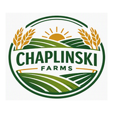

Rock MarkerMark rocks, outline fields, log every load into the bins, track tillage, fertilizer, sprays and grain sales — all on one map, on any phone. And it keeps working when you have no signal.
Everything is on the map, so nobody has to explain which field they mean.
Drop a pin where you are with one tap. The picker walks straight to the closest rock next.
Big buttons: which bin, in or out, Tandem or Semi, how full. Bushels add up by themselves, and every load shows who logged it.
Fields shade grey as they’re worked. It flags fertilizer that went on but hasn’t been worked in yet.
Suggested blends from U of M and NDSU guides, plus the co-op’s blend tickets kept with each field.
Seed, planting, every spray pass with REI and PHI, and yield. Crews see “no entry” warnings right on the map.
The hour-by-hour forecast for each field, with a plain answer: good to spray, too windy, or rain coming.
Log contracts and cash sales, see how much is sold, and see the cost and profit for each field. Owner and Executives only.
Crop totals, bins, loads per day, tillage, and a season report for any field. Print them or text them as a PDF.
Keep working in the dead spots. Everything is saved on the phone and sent to the farm when you get a bar back.
Each person gets a role, so they only see what they need.
| Role | Good for | What they can do |
|---|---|---|
| Worker | Truck drivers, rock pickers, hired help | Mark rocks, log loads, log passes and tillage, check weather |
| Manager | The person running the crew | Everything a Worker can do, plus fields, bins, crops, jobs, parts and reports |
| Executive / Owner | Owners and partners | Everything, plus locking a year’s plan, grain sales, profit and approving people |
The app walks you through it with a setup checklist the first time.